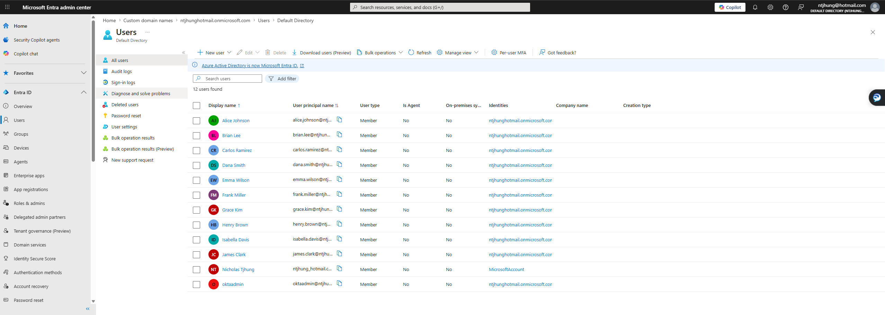

Entra ID User Lifecycle Automation
Built a Microsoft Entra ID user lifecycle automation lab using PowerShell and Microsoft Graph to simulate onboarding, group assignment, access removal, and audit evidence collection.
Entra ID
PowerShell
Microsoft Graph
CSV Import
JML Workflow
Job skills shown: user provisioning, deprovisioning documentation, Joiner-Mover-Leaver workflows, group-based access control, IAM automation, and audit evidence collection.